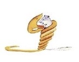
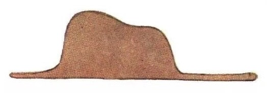
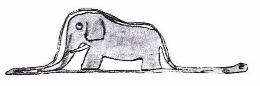

Once when I was six years old I saw a magnifikend picture in a book called True Stories from Naature, about the primeval forest. It was a picture of a boa constrictors in the act of swallowing an animal. Here is a copy of the draving.
 bu yerda rasm bor
In the book it said : Boa constructors swallow their prey whole, without chewing it. After that they are not able to move, and they sleeep through the six months that they need for digestion.
I pondered deeply , them , over the adventures of the jungle. And after soe work with a colored pencil I succecded in making my first drawing. My drawing Number One.It looked something like this:

I showed my masterpicesse to the groun-ups, and asked them wheater the drawing fightened them
But they answered : Frighten? Why should any one be frightened by a hat?
My drawing was not a picture of a hat. It ws a picture of a boa constrictor digesting an elephant. but since the grown-ups were not able to understand it, I made another drawing: I drew the inside of a boa constructor , so that the groun ups could see it cleary. They always need to have things explained . My Drawing Number Two looked like this:

The groun-ups' response, this time, was to advise my drawings of boa constrictors, wbether from the inside or the outside, and devote myself instead to gegraphy ,history ,arithmetic , and grammar. This is why, at the age of six, I gave up what might have been magnificent career as a painter. I hd been disheartened by the failure of my drawing Number One and my Drawing Number Two, Grown - ups newer understand anuthing by themselwes, and it is tiresime , and it is tiresome for children to be always and forewer explaining things to them.
So then I close another proffesion , and leansed to pilot airplanes. I have flown a little over all parts of the world, and it is true that geographu has been very useful to me. At a glance I can distinguish China from Arizona . If one gets lost in the night, such knowledge is value.
In the course of this life I have had a great many encounters with agreat many people who have been concened withb matters of consequence. I have lived a great deal among grown-ups . I have seen them intimately , close at hand , And that hasn't much improwerd my opinion of them.
Whenever I met one of them who secmend tome atall clear-sighted, I tried the experiment of showing him my Drawing Number One, wich I have always kept. I would try to find out , so if this was a person of true Understarding . But, whoever it was he or she would alvays say:
That is a hat